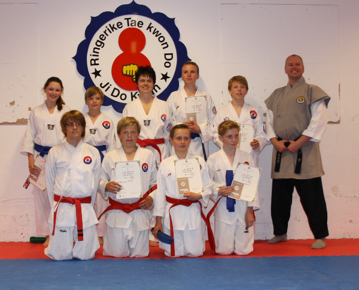

Innlegg
Gradering Ungdom og voksne Søndag 16 juni 2013

På ungdom/voksne hadde alle gradert før og den laveste graderte var en grøntbelte og det gikk helt opp til rødt med en stripe. Alle visste hva det gikk ut på og det var å følge instruksene til Master Jon Lennart. Mange timer gikk med til utføring av teknikker, frikamp og knekking av planker. Når klokken slo 17:00 var alle glade hvor du kunne gå ut å vise fram det nye beltet eller en ny stripe på beltet.
Medlemmer av Ringerike TKD takker Jon Lennart og Geir Karlsen for å ta seg tid til å være i klubben og gradere oss hele denne helgen.